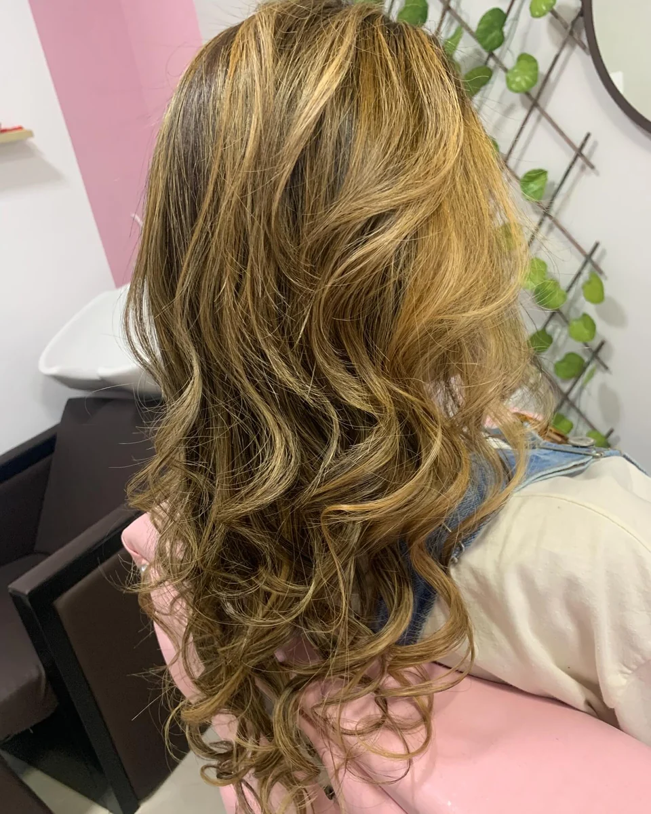
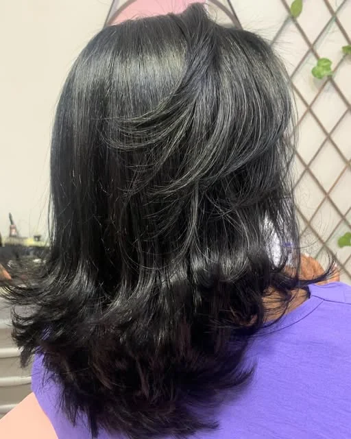
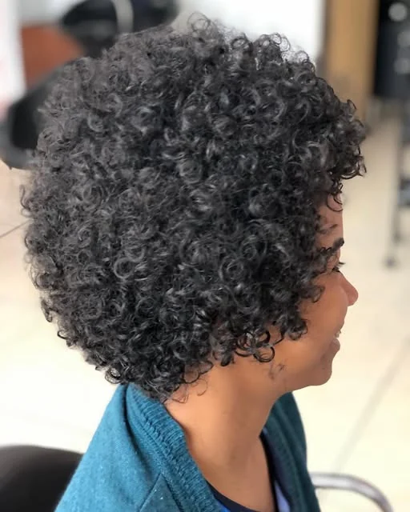
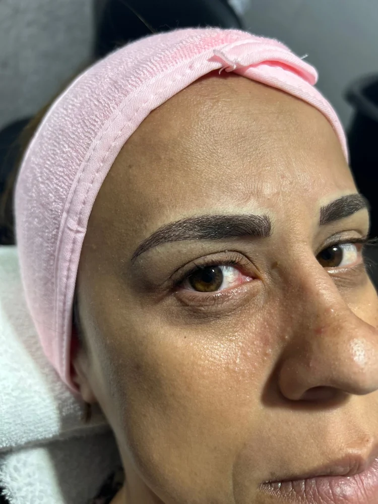
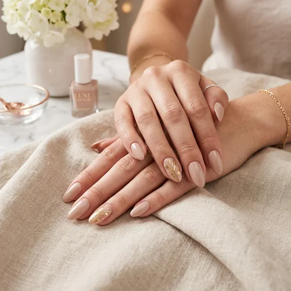

Cortes e tratamento
Um visual com movimento e cuidado.
Quero esse visual Ver publicação no Instagram ↗SEU SALÃO NO PARQUE IMPERIAL
Encontre seu próximo visual nos trabalhos reais do Studio. Escolha seu cuidado e consulte valores e horários pelo WhatsApp.

FOTO REAL / STUDIO DI CATARINA
Beleza real. Feita por aqui. CABELO / UNHAS / OLHARESCOLHA A SUA PRÓXIMA INSPIRAÇÃO
Trabalhos publicados nas redes do Studio.
Gostou de um visual? Leve a referência para a conversa.
Um visual com movimento e cuidado.
Quero esse visual Ver publicação no Instagram ↗
TRABALHO REAL DO STUDIOSeu cabelo, com a sua identidade.
Quero esse visual Ver publicação no Instagram ↗
TRABALHO REAL DO STUDIODetalhes que valorizam a expressão.
Quero esse cuidado Ver publicação no Facebook ↗NOSSO MENU DE CUIDADOS
Para renovar o visual ou manter o cuidado em dia.
Encontre o
seu próximo momento por aqui.
Cor, movimento e cuidado para acompanhar a sua melhor versão.

02 / UNHAS · ILUSTRAÇÃODo clássico ao seu estilo. Acabamento e delicadeza em cada escolha.
Valorize a sua expressão com um desenho que conversa com você.
Cabelos e sobrancelhas: fotos reais das redes do Studio. A imagem de unhas é ilustrativa.
BEM-VINDA AO DI CATARINA
Entre a rotina e tantos compromissos, você também merece estar na sua lista de prioridades.
No Studio Di Catarina, no Parque Imperial, reunimos cuidados para cabelo, unhas e sobrancelhas em um só lugar. A proposta é simples: ouvir o que você deseja e cuidar dos detalhes que fazem você se sentir bem.
DO DESEJO AO SEU NOVO VISUAL
Explore os serviços e salve o visual que combina com você.
Conte o que deseja e consulte valores e horários pelo WhatsApp.
A equipe confirma os detalhes e o agendamento com você.
PERTINHO DE VOCÊ
Esperamos você no Parque Imperial, em Barueri.
Segunda a sábado, das 7h às 19h
Atendimento mediante
agendamento
ANTES DO SEU MOMENTO
Estamos a uma mensagem de distância.
Converse com a genteClique em “Agendar horário”, escolha o cuidado desejado e continue no WhatsApp. Nossa equipe combina com você a disponibilidade e confirma o atendimento por lá.
Fale com a equipe pelo WhatsApp e conte qual procedimento deseja. Para cabelos, você também pode enviar uma foto do visual atual e uma referência. O orçamento e a necessidade de avaliação são combinados diretamente com o Studio.
Coloração, mechas, morena iluminada, cortes e tratamentos capilares, além de alisamento personalizado sem formol, liberado pela Anvisa; mão tradicional, pé tradicional, blindagem e spa dos pés; design de sobrancelhas e henna; spa facial.
Na Rua Frei Henrique Soares de Coimbra, 77, Parque Imperial, Barueri. Atendemos de segunda a sábado, das 7h às 19h, com agendamento prévio.